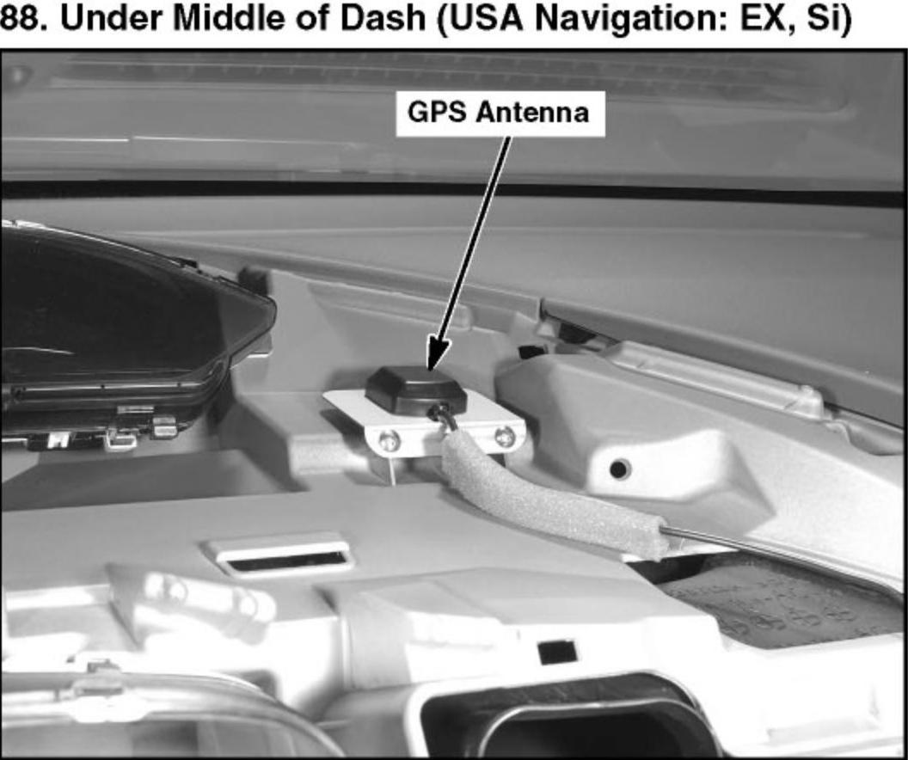

Operation CHARM
: Car repair manuals for everyone.
Home
>>
Honda
>>
2007
>>
Civic Si L4-2.0L
>>
Repair and Diagnosis
>>
Locations
>>
Component Locations
>>
Locations By Photo Number
>>
Location Photos 76-100
>>
88. Under Middle of Dash (USA Navigation: EX, Si)
88. Under Middle of Dash (USA Navigation: EX, Si)
88. Under Middle of Dash (USA Navigation: EX, Si):
